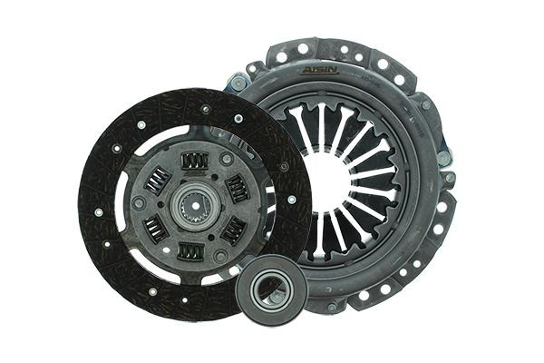
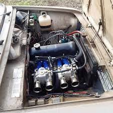
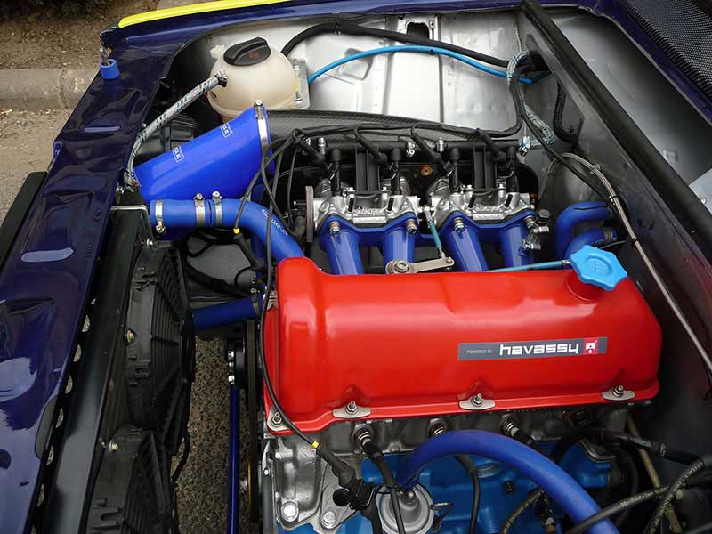
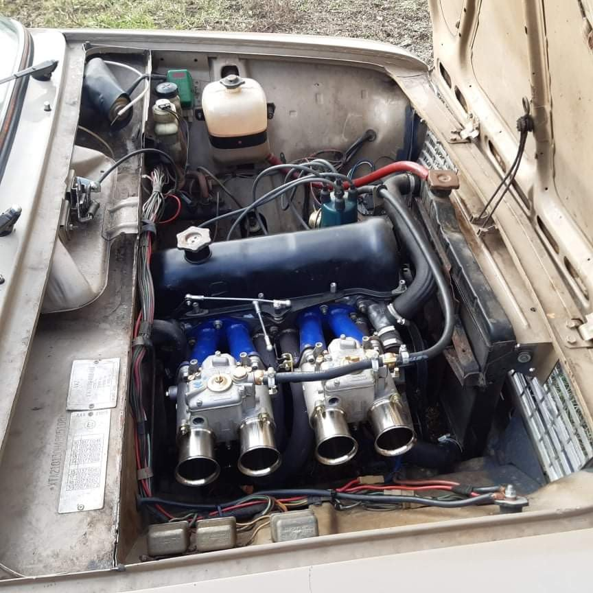

Motor

1200-1500
A Lada autók mögött álló AvtoVAZ vállalat motorjai kulcsfontosságú szerepet játszanak az autók teljesítményében és megbízhatóságában. A Lada motorok általában egyszerű és robosztus kialakítással rendelkeznek, ami hozzájárul a járművek alacsony fenntartási költségeihez és könnyű karbantartásához.

A Lada motorgyártás hagyományai messzire nyúlnak vissza, egészen a szovjet időkig. A vállalat a kezdetektől fogva arra törekedett, hogy megbízható és gazdaságos erőforrásokat biztosítson járműveihez. Ennek eredményeként születtek olyan motorok, amelyek egyszerűségükkel és strapabíróságukkal kivívták a felhasználók bizalmát.
A Lada motorok különböző típusokban és méretekben érhetők el, hogy kielégítsék a különböző igényeket és felhasználási területeket. A népszerű Lada Niva terepjárókhoz például általában kis teljesítményű, de erős és megbízható motorok tartoznak, amelyek kiválóan teljesítenek a nehéz terepen és a kihívásokkal teli körülmények között.

A Lada motorokat általában könnyen karbantarthatók és javíthatók. Az alkatrészek széles körben elérhetőek és gyakran univerzálisan alkalmazhatóak más típusú autókhoz is, ami megkönnyíti a tulajdonosok számára az alkatrészbeszerzést és a javítási munkálatokat.
Bár a Lada motorokat nem mindig ismerték a legnagyobb teljesítményről vagy a legújabb technológiai fejlesztésekről, azok híresek voltak a megbízhatóságukról és a tartósságukról. Ezáltal a Lada autók tulajdonosai sokszor hosszú távon bíznak meg járműveikben, tudván, hogy a motorjukra számíthatnak a hosszú élettartam és a problémamentes működés tekintetében.
